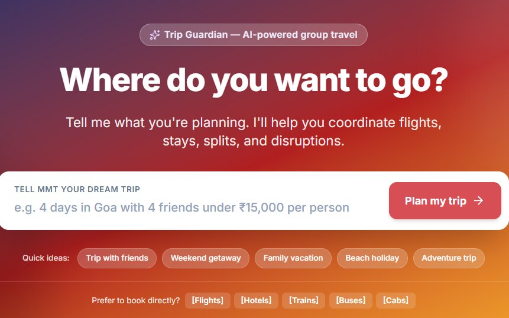
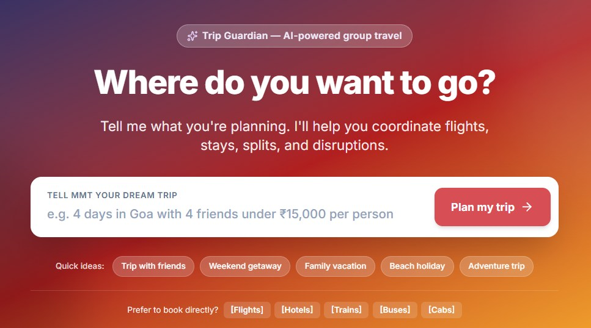

Trip Guardian by MMT
AI-First, Collaborative Travel Platform Concept · MakeMyTrip · Case competition
Designed an AI-integrated group travel planning concept for MakeMyTrip that embeds AI as structured, transparent recommendations (not a chatbot), adds group decision-making and cost-splitting, and keeps MMT’s booking record as the defensible core — developed for a case competition on MMT’s AI strategy.

- Context
- Case competition / product strategy exercise on MakeMyTrip, India’s largest OTA
- My role
- Sole strategist/designer covering research, personas, journey mapping, prioritization and solution design
- Team
- 2, working solo before merging with a teammate’s parallel technical draft
Product preview

Context
A case competition / product strategy exercise on MakeMyTrip, India’s largest OTA. Outside-in exercise using public information on MMT’s AI investments (Myra, OpenAI partnership) as a starting point.
My role: sole strategist/designer covering research, personas, journey mapping, prioritization, and solution design, working solo before merging with a teammate’s parallel technical draft. Team size: 2.
Problem
Two shifts threatened MMT’s “search-and-transact” model: (1) AI is pulling trip inspiration and planning off-platform onto tools like ChatGPT, risking MMT becoming a commoditized checkout layer; (2) the highest-friction moments — refunds, disruptions, group cost-splitting, trust in recommendations — remained unsolved by both MMT’s current product and generic AI tools, which can inspire but can’t book, protect, or manage a trip since they don’t own inventory or payments. That gap was MMT’s clearest advantage, but nothing made it felt across the journey.
Process
Research
Synthesized public data on MMT’s Myra usage and voice/vernacular adoption; cross-referenced Indian traveler AI-adoption surveys, separating stated intent (~60-70% open to AI planning) from actual booking trust (~12-15% comfortable with autonomous AI booking).
Discovery
Built five personas with deliberately conflicting needs (spontaneity vs. protection, speed vs. consensus) to pressure-test a single product; mapped full journeys independent of any platform first.
Prioritization
Scored features via a MECE framework (Impact × 2 + Differentiation + Feasibility) to separate must-build from later-phase work.
Key tradeoffs
Reconciled my lean MVP approach with a teammate’s more comprehensive technical spec (full backend, accessibility-inclusive logic) into a tiered P0/P1/P2 prompt; decided group features belonged in the MVP despite added complexity, given their estimated 30-40% share of bookings.
Decisions
Chose
Trip Object
A persistent “Trip Object” as the architectural core — one record spanning inspiration through disruption through memory, which is what a standalone AI tool structurally can’t replicate.
Decoupling AI from chat UI
AI shows up as labeled, dismissible reasoning panels (fit scores, “why this?”) inside structured screens; the Myra chatbot is demoted to an optional side channel, never gatekeeping the core flow.
Group collaboration as day-one, not v2
Voting, preference synthesis, and Splitwise-style cost-splitting built into the initial scope.
Trust mechanics as explicit product features
Plain-language cancellation terms, visible score breakdowns, and approval gates before any AI-initiated spend, directly responding to the stated-vs-actual trust gap found in research.
Rejected
- A fully autonomous AI booking agent — more impressive as a demo, but misaligned with the ~12-15% actual trust ceiling.
- Replacing MMT’s homepage/booking ribbon with an AI-only entry point — kept the familiar flow one click away for high-intent users.
- A single undifferentiated AI experience for all travelers — personas’ needs genuinely conflict, so features were persona-weighted instead.
- Full production-grade backend for the prototype stage — chose a frontend-only, mock-state build for demo reliability over architectural realism at this phase.
Outcome
This was a strategy/design exercise, not a shipped product — no live metrics exist. Deliverables: a complete strategic narrative from segmentation through phased solution, four visual frameworks (journey map, architecture, wireframes, priority matrix), a build-ready prototype prompt with a full design system and P0/P1/P2 scope, and extended mock datasets (21 destinations) to support a realistic demo.
Key lesson
The most valuable move wasn’t adding AI — it was deciding where AI shouldn’t be the interface. Reversing the default “AI = chatbot” assumption, based directly on the trust-gap data, was the single decision that most shaped the rest of the product.